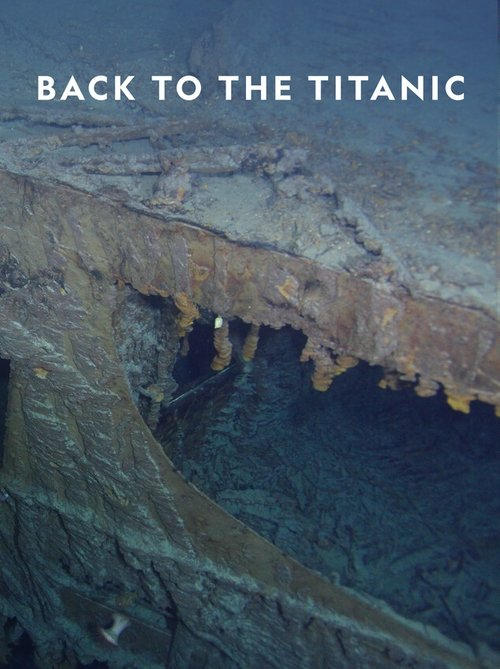

Back to the Titanic (2020)
الوصف: Back to the Titanic documents the first manned dives to Titanic in nearly 15 years. New footage reveals fresh decay and sheds light on the ship’s future.
الممثلون
- Nigel Barber (Self - Narrator (voice))
- Elliot Graves (Self - Technical Supervisor)
- Lori Johnston (Self - Microbial Ecologist)
- Sindbad Rumney-Guggenheim (Self - Relative of Benjamin Guggenheim)
- Parks Stephenson (Self - Titanic Specialist)
- Victor Vescovo (Self - Chief Submersible Pilot)
المخرج: Tom Stubberfield
المنتج: Tom Stubberfield